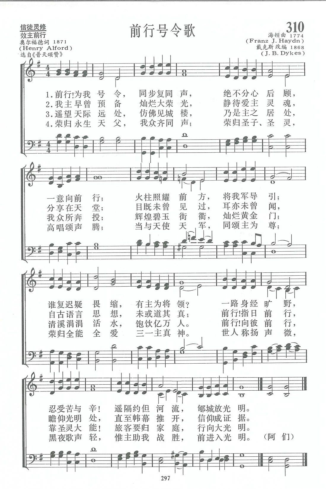
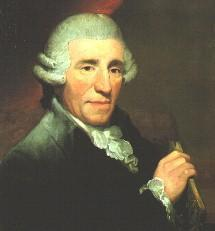

|
|
讚美詩(新編) 第310首《前行號令歌》 |
|
1 Forward! be our watchword, 2 Forward, fleck of Jesus, 3 Glories upon glories |
1.前行！為我號令，同步復同聲， |
|
https://www.zanmeishige.com/tab/13983.html?songbook=1&index=310

|
|
|
|
|


https://www.youtube.com/watch?v=ILPzDZs2wtk -
Forward! Be Our Watchword - Historic Christian Hymn / Spiritual Song Lyrics
with Orchestral backing music.
https://youtu.be/NinlEB5vRos
| Text: | Forward Be Our Watchword |
| Author: | Henry Alford |
| Tune: | ST. ALBAN'S |
| Composer: | F. J. Haydn, 1732-1809 |
| Short Name: | Henry Alford |
| Full Name: | Alford, Henry, 1810-1871 |
| Birth Year: | 1810 |
| Death Year: | 1871 |
Alford, Henry, D.D.,

son of the Rev. Henry Alford, Rector of Aston Sandford, b. at 25 Alfred Place, Bedford Row, London, Oct. 7, 1810, and educated at Trinity College, Cambridge, graduating in honours, in 1832. In 1833 he was ordained to the Curacy of Ampton. Subsequently he held the Vicarage of Wymeswold, 1835-1853,--the Incumbency of Quebec Chapel, London, 1853-1857; and the Deanery of Canterbury, 1857 to his death, which took. place at Canterbury, Jan. 12, 1871. In addition he held several important appointments, including that of a Fellow of Trinity, and the Hulsean Lectureship, 1841-2. His literary labours extended to every department of literature, but his noblest undertaking was his edition of the Greek Testament, the result of 20 years' labour. His hymnological and poetical works, given below, were numerous, and included the compiling of collections, the composition of original hymns, and translations from other languages. As a hymn-writer he added little to his literary reputation. The rhythm of his hymns is musical, but the poetry is neither striking, nor the thought original. They are evangelical in their teaching, but somewhat cold and conventional. They vary greatly in merit, the most popular being "Come, ye thankful people, come," "In token that thou shalt not fear," and "Forward be our watchword." His collections, the Psalms and Hymns of 1844, and the Year of Praise, 1867, have not achieved a marked success. His poetical and hymnological works include—
-
(1) Hymns in the Christian Observer and
the Christian Guardian, 1830. (2) Poems
and Poetical Fragments (no name), Cambridge, J. J.
Deighton, 1833. (3) The School of the Heart, and
other Poems, Cambridge, Pitt Press, 1835. (4) Hymns for
the Sundays and Festivals throughout the Year, &c.,Lond., Longman
ft Co., 1836. (5) Psalms and Hymns, adapted for the
Sundays and Holidays throughout the year, &c, Lond., Rivington,
1844. (6) Poetical Works, 2 vols., Lond.,
Rivington, 1845. (7) Select Poetical Works,
London, Rivington, 1851. (8) An American ed. of his Poems,
Boston, Ticknor, Reed & Field, 1853(9) Passing away,
and Life's Answer, poems in Macmillan's
Magazine, 1863. (10) Evening Hexameters, in Good
Words, 1864. (11) On Church Hymn Books, in
the Contemporary Review, 1866. (12) Year
of Praise, London, A. Strahan, 1867. (13) Poetical
Works, 1868. (14) The Lord's Prayer, 1869.
(15) Prose Hymns, 1844. (16) Abbot
of Muchelnaye, 1841. (17) Hymns in British
Magazine, 1832. (18) A translation of Cantemus
cuncti, q.v.
-- John Julian, Dictionary of Hymnology (1907)
Tune Information
| Title: | ST. ALBAN (Haydn) |
| Composer: | Joseph Haydn |
| Meter: | 6.5.6.5 |
| Incipit: | 33221 55566 24433 |
| Key: | F Major/G Major or modal |
| Copyright: | Public Domain |

第310首 前行号令歌 Forward!be our watchword _奥尔福德
经文：“日间，耶和华在云柱中领他们的路；夜间，在火柱中光照他们,使他们日夜都可以行走”(出13：21)。
写《前行号令歌》的经过很感动人。187O年圣灵降临节，英国坎特伯雷主教座堂要举行第九次唱诗班联合会，事前计划在礼拜时有九百人的大合唱。该堂副牧伍德请奥尔福德主任牧师写一首雄壮有力的圣诗中以供唱诗班列队前行进入圣堂时唱用。
不久奥尔福德写了一首诗交给了伍德，后者看了之后认为诗意不错，只是为大会的进行曲则嫌不够雄壮，乃婉请奥尔福德再写一首，并且建议，写诗之前先到大座堂里顺着唱诗班所走的路线，自己先走一趟，也许会有新的启发。老牧师谦虚地接受了建议，在他慢步走进圣堂时，果然启发很深，写了一首长达96行的进堂圣诗。
从以色列人出埃及后在红海边听见主吩咐他们“往前走”的命令(出14；15)以及经过红海入美地，在旷野有云柱、火柱导引的经验，证明惟有前进才有生路，惟有前进才有光明。当他在世的生命即将告终的时刻，他写下了心中的向往。
《新编》中的这一首歌词是按照《普天颂赞》(旧版)第365首沈子高主教译词中的四节。
奥尔福德牧师写完这首诗后,又特为它谱曲，但只有女高音和男低音两部。于是，他写个便条给伍德副牧说；“老牧师写了这首诗，只给他戴上帽子和穿上鞋，请青年牧师给他穿上衣服吧!”在伍德的努力下，那一次大会唱诗班唱得生动有力，只是奥尔福德本人却已经进入了那“辉煌碧玉街衢，灿烂黄金门”，不能在世上亲聆此曲了。
原来的曲调未流传下来，目前各赞美诗集里通用调是戴克斯(事略参阅第l首)根据海顿的名曲改写而成，非常适合于进入圣堂时唱诵。调名为《(ST．ALBAN)》。
《新编》除这首外，第289首也是奥尔福德的佳作。
Words: Henry Alford (b. Oct. 7, 1810; d. Jan. 12, 1871)
Music: Forward (or Smart), by
Henry Thomas Smart (b. Oct. 26, 1813; d. July 6, 1879)
Links:
Wordwise Hymns (Henry
Alford)
The Cyber
Hymnal
Hymnary.org
Note: Henry Alford was Dean of Canterbury Cathedral, a great Greek scholar, and a hymn writer. He gave us Come, Ye Thankful People, Come, and Ten Thousand Times Ten Thousand, the latter being a wonderful description of the victorious saints in heaven.
The dean was asked to write a processional hymn for the Tenth Choral Festival of the massed choirs of the Canterbury Diocese, and he did so–but not without difficulty. He sent in a hymn, and it was returned, with a note saying the poetry was fine, but the rhythm wasn’t suitable for marching. The suggestion was made that the dean go into the cathedral, walk slowly down the aisle the procession was to take, and compose a hymn as he did so! Apparently, that worked.
Picture the spectacle of about a thousand choristers coming in procession into the great Cathedral, singing Dean Alford’s hymn. It took a full half hour for them all to process in, and it must have been a stirring sight and sound! (Henry Alford died before the event, so he never got to witness it.)
For army troops, commands such as the old “Charge!” or “Forward march!” mean they are to go onward immediately, to move ahead, to advance or progress from where they are.
There may be difficulties and dangers to be confronted, battles to be fought, obstacles to overcome, but on they go. Of course, sometimes there is a retreat. But that’s not always a sign of failure. It may be strategic and temporary, for the sake of defense. regrouping, or drawing the enemy into an ambush (cf. Josh. 8:3-7).
A well-trained army will instantly follow the order given to advance. They’re not asked to take a vote on whether they think what the commander asks of them is a good idea. But there have been times when foolish orders or faulty reconnaissance have led to a tragic loss of life.
During the Crimean War, in the Battle of Balaclava (1854), British light cavalry, armed with swords, were ordered to charge a Russian emplacement of heavy artillery, a fatal mistake. In 1876, at the Battle of the Little Bighorn (popularly called Custer’s Last Stand), Lieutenant Colonel George Custer led his troops into an engagement based on wrong information about the strength of the enemy he faced. Both incidents led to overwhelming defeat and death.
Soldiers are trained to obey the orders of their commanding officer. But it’s a helpful thing, before enlisting, to learn something of the principles and goals that form the basis of what the troops will be called upon to do. And to know something about the quality of those in command.
Apply that to the Christian life. The Bible is quite clear that we’re in a spiritual war against Satan, and against this evil world system that he controls. Our Commander is the Lord (Col. 3:24). The Apostle Paul says, of Him, “I know whom I have believed and am persuaded that He is able” (II Tim. 1:12).
Against error and corruption, we are to “contend earnestly for the faith which was once for all delivered to the saints” (Jude 1:3). We’re to be “be strong in the Lord and in the power of His might….and “take up the whole armour of God, that [we] may be able to withstand in the evil day, and having done all, to stand” (Eph. 6:10, 13).
Paul himself set an example for others, saying, “One thing I do, forgetting those things which are behind and reaching forward to those things which are ahead, I press toward the goal for the prize of the upward call of God in Christ Jesus” (Phil. 3:13-14). And his testimony, near the end of his life was, “I have fought the good fight…I have kept the faith” (II Tim. 4:7).
There are Old Testament examples too, of God’s “Forward march!” When Moses led the children of Israel out of bondage in Egypt, they were pursued by Pharaoh’s chariots, and seemed to be trapped on the shores of the Red Sea. But God commanded, “Tell the children of Israel to go forward” (Exod. 14:15). Then, in a mighty miracle, the Lord opened up the sea before them, and they escaped. Then the returning waters drowned the Egyptians (Exod. 14:13-29).
CH-1) Forward! be our watchword, steps and voices joined;
Seek the things before us, not a look behind;
Burns the fiery pillar at our army’s head;
Who shall dream of shrinking, by our Captain led?
Forward through the desert, through the toil and fight;
Jordan flows before us; Zion beams with light.
CH-2) Forward! When in childhood buds the infant mind;
All through youth and manhood not a thought behind;
Speed through realms of nature, climb the steps of grace;
Faint not, till in glory, gleams our Father’s face.
Forward, all the lifetime, climb from height to height,
Till the head be hoary, till the eve be light.
CH-5) Far o’er yon horizon rise the city towers
Where our God abideth; that fair home is ours:
Flash the streets with jasper, shine the gates with gold;
Flows the gladdening river shedding joys untold.
Thither, onward, thither, in the Spirit’s might;
Pilgrims to your country, forward into light!
Questions:
1) What did the Lord mean when He said, “No one, having put his hand to
the plow, and looking back, is fit for the kingdom of God” (Lk. 9:62)?
2) What does it mean in practical terms to focus our attention forward, and not keep looking back on the past?
Links:
Wordwise Hymns (Henry
Alford)
The Cyber
Hymnal
Hymnary.org
https://wordwisehymns.com/2016/08/17/forward-be-our-watchword/